Ingenico merchant app
Designing a merchant payment Android application with diverse payment functionalities.
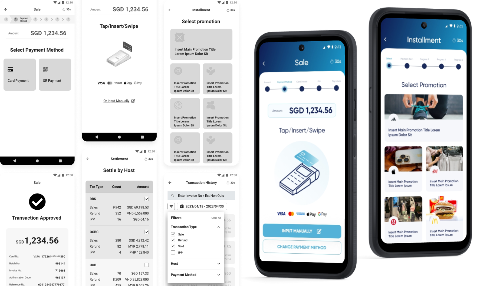
Transitioning from payment terminals to an Android application
Ingenico provides payment solutions and services to merchants and banks globally. Their primary product is payment terminals, which enable businesses to accept various payment methods, such as credit/debit cards, mobile wallets, and contactless payments.
As the world continues to embrace the digital age, Ingenico wanted to develop an Android application to remain competitive. This initiative will not only help them stay on par with their competitors but also offers their clients a quicker and more cost-effective way to get started.
Project goals
Our objectives were to establish a user-friendly and adaptable interface for Ingenico, aimed at delivering a seamless experience and maintaining consistency throughout the APAC regions. This design needed to be versatile enough to cater to the unique requirements of various local markets. For example, in some countries, QR wallets are the favored payment method, whereas in others, users still prefer card payments with either PIN entry. We also wanted to ensure a smooth experience for the users, mainly cashiers and managers.
Mapping out the journey of a user's interaction with the app
To really understand how users might use the product, I started by creating a user flow map of the main user journeys. This basically helped me see the steps users would go through to get things done. Since the product is quite complex, the stakeholders and I decided to break it down into smaller parts. In the first batch, we focused on the most common tasks like sales, installment payments, voiding transactions, processing refunds, and settling transactions. Here are some of the flows I created:
The sales flow: Processing a payment
There are two primary options available to users: cards or QR wallets.
- Cards include credit/debit cards, which can be inserted, tapped, or swiped on the Android device. Alternatively, users can manually input their credit card details. Certain cards may require a Personal Identification Number (PIN), while others may require a signature for validation.
- For payment via QR wallets, users have a choice between scanning a QR code from their own device or displaying a QR code for scanning by the cashier's device.
To ensure a comprehensive understanding of the user experience, I meticulously mapped out all potential transaction flows. These flows encompass scenarios where transactions are either approved, denied, or encounter a timeout issue. In the event of a transaction failure, users would be provided with the option to retry. If the transaction successfully passes through these stages, it proceeds to the processing and printing screens.
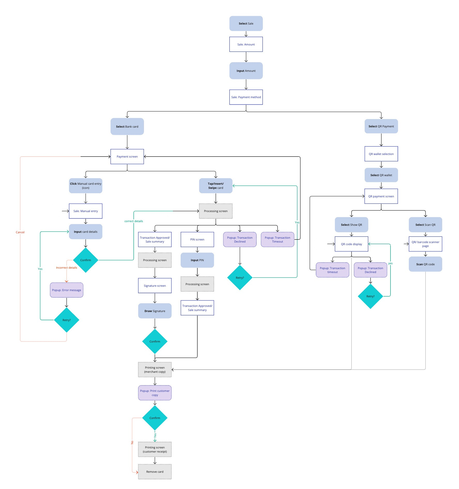
The Installment flow: Equal payments over a period of time
When it comes to credit card installment payments, certain merchants may offer special promotions tied to specific brands. The payment process begins with the cashier's selection of a particular promotion or opting for no promotion at all.
Next, the user is presented with the option to select a payment term. This can be done by selecting from a list of predefined choices (eg. 3 months, 6 months, 12 months). We also provided users with the flexibility to manually input their preferred payment term.
Following the selection of the payment term, users are prompted to enter the payment amount. The system then automatically divides this amount by the chosen payment term to calculate the installment amounts.
The remaining steps of the process follow the standard credit card sales flow.
Settlement: Completing the financial transaction
Typically, settlements are processed in separate batches by each host at the end of the day. Following discussions with stakeholders, I devised two distinct flows to streamline the settlement process.
- The first flow, termed "Settle All," enables users to settle all transactions simultaneously.
- The second option, known as "Settle by Host", provides users with the flexibility to settle transactions based on the acquiring bank associated with each transaction.
Once users have confirmed their chosen batches for settlement, the system initiates the processing, allowing users to monitor the progress until the settlement is complete and results are available. In the event of any transaction failing to settle, users are given the option to initiate a retry.
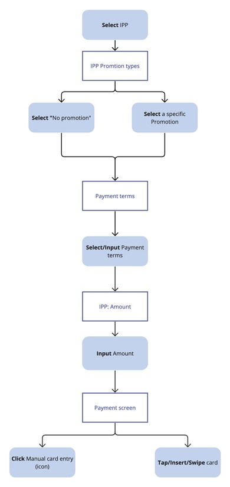
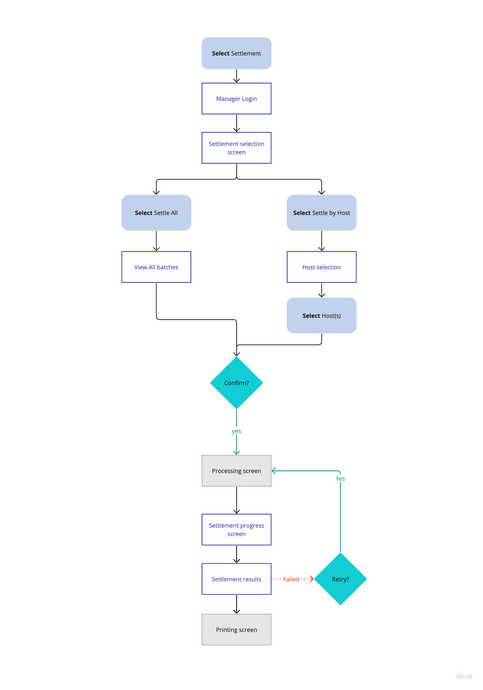
Building a sitemap
By referencing the user flow map, we were able to identify all the key screens that users would encounter during their interactions with the app. Each branch of the user flow map represented a specific pathway or set of actions, and these translated directly into the various sections and screens within the sitemap.
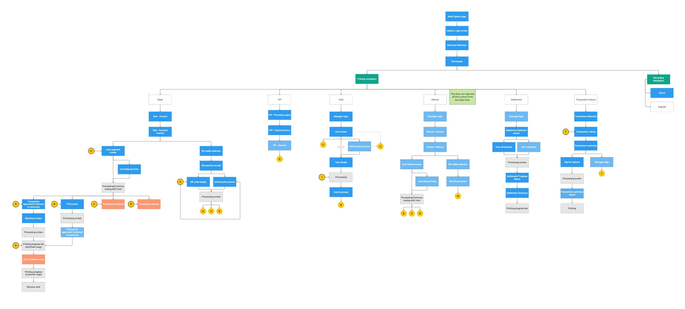
Crafting the designs
After getting the green light from the stakeholders on the user flow and sitemap, I started working on the design. Here are some of the lofi and hifi designs.
The login screens
As the only users with login access to the app would be pre-determined by the merchant (cashiers and managers), I implemented a dropdown selection that presents users with pre-defined user IDs to simplify the login process, eliminating the need for users to manually input their user ID each time.
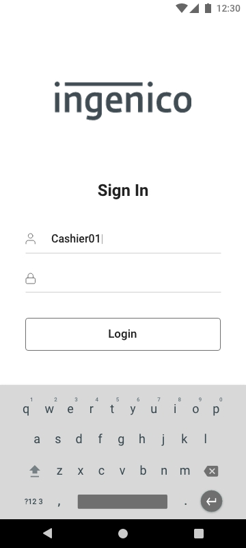
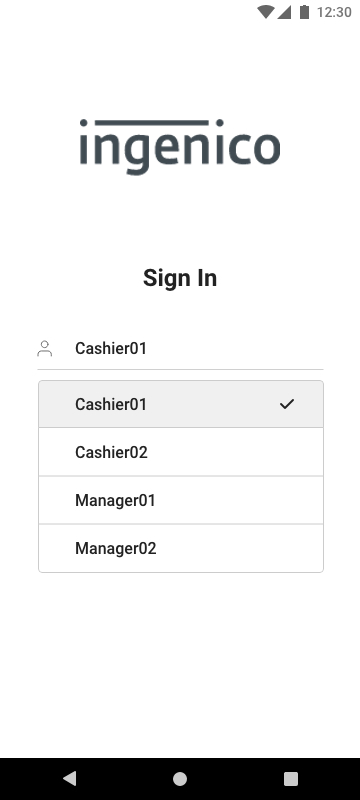
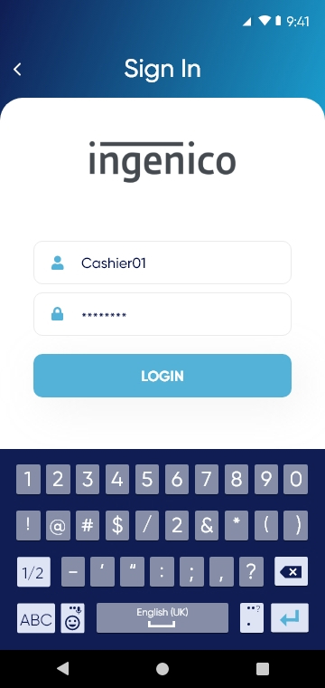
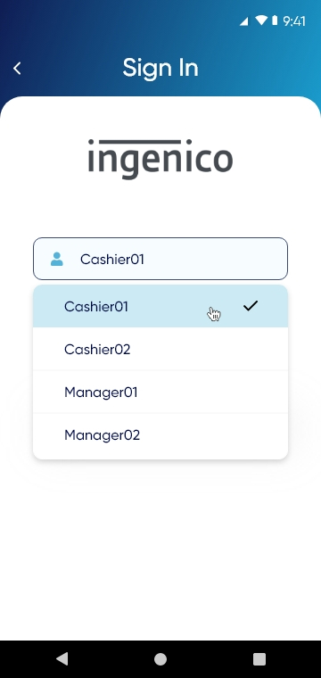
Designing for different market specifications
In markets like the Philippines and Vietnam, where larger amounts are common, I created two input field versions and keypads. One allowed up to 8-10 digits with a '000' button for cashier convenience.
Following stakeholder feedback for more digits and a '00' button, we adjusted the input field's font size in the hifi stage, and added an extra keypad screen. We also included a currency dropdown for user flexibility.
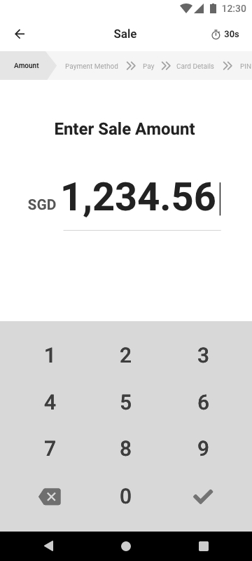
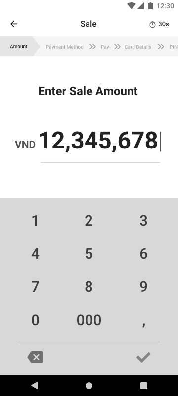
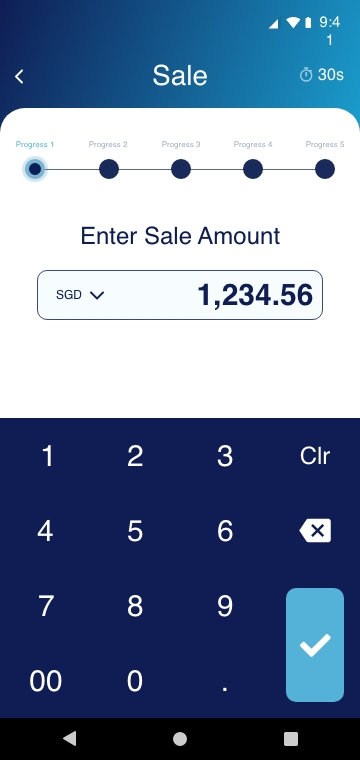
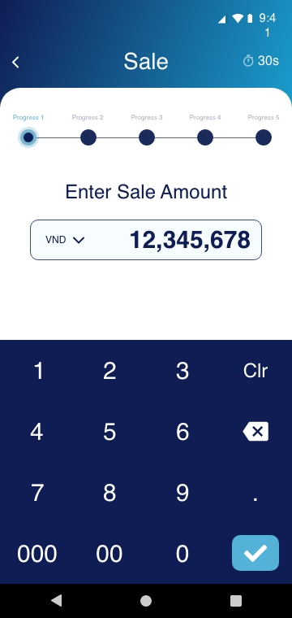
QR wallet payments
For QR payments, I designed a toggle switch to allow users to easily switch between "View QR" which displays a QR code on the Android device, or "Scan QR", where customers can scan a QR code from their own device.
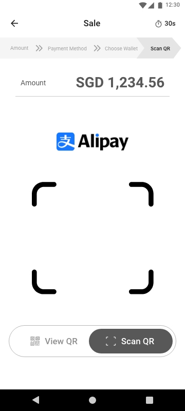
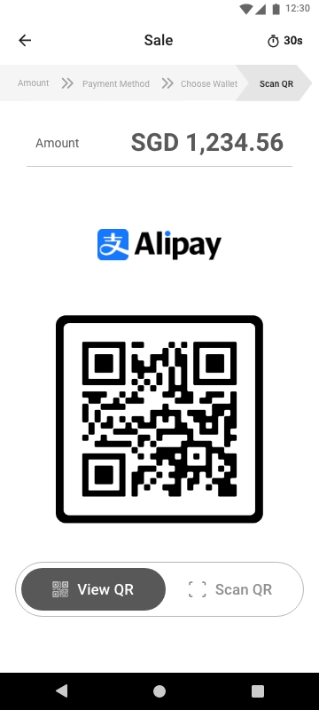
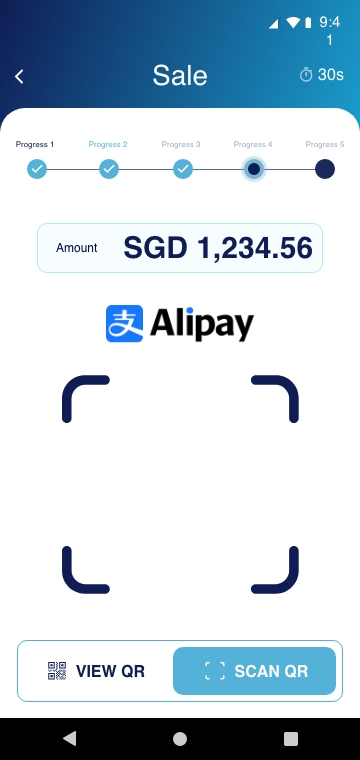
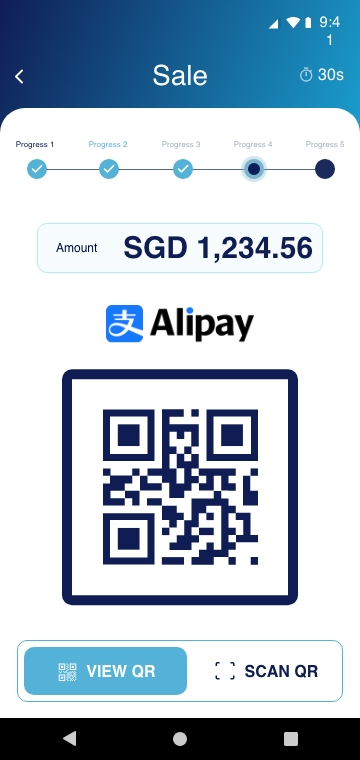
Settlement - Settle All vs Settle by Host
As users can settle transactions individually or in batches by host, I initially designed two screens. In the "Settle by Host" wireframe, I designed for the selection of multiple hosts.
Later on during the hifi phase, we recognised that even if users choose to "Select by Host", they may sometimes choose to Select All, then manually de-select specific items. We enhanced the design by adding a 'Settle All' checkbox to the "Settle by Host" screen to streamline this process.
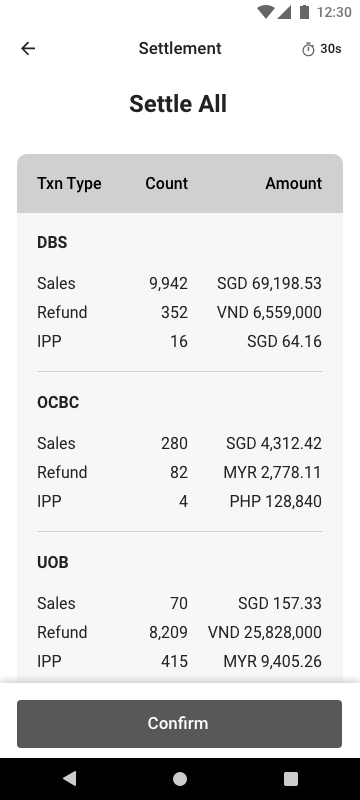
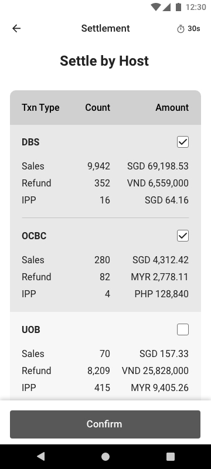
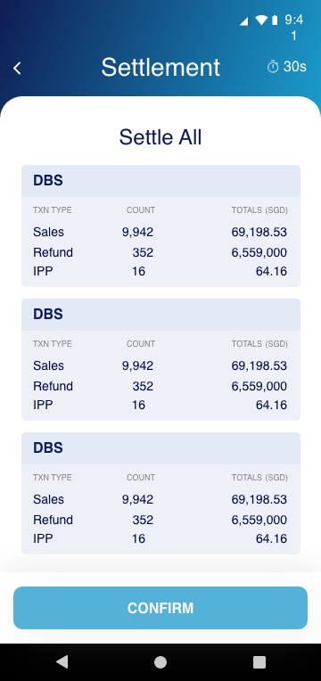
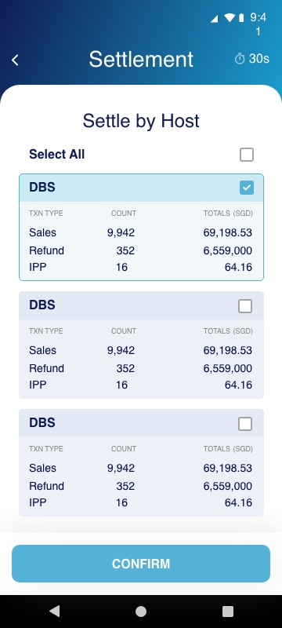
Viewing previous transactions
Another important function of the app was to allow users to view previous transactions. I designed a transaction history page with a search bar to locate transactions by Invoice number or amount. I also included filters for Transaction Type, Host, and Payment Method to make it easier for users to find the transaction they need. Additionally, I added category tags for each transaction, improving visual clarity and making it easier for the user to scan the list.
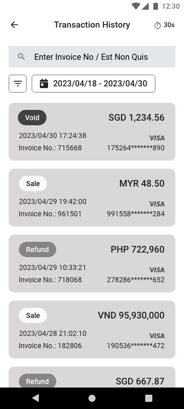
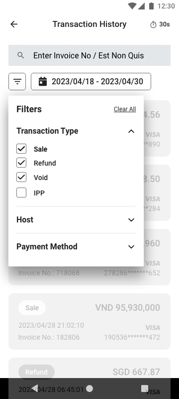
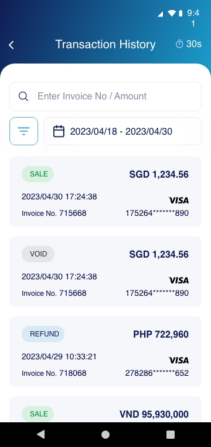
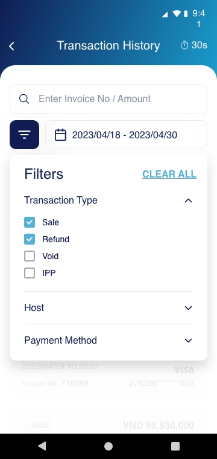
The rest of the designs
This project is a WIP, we are currently polishing the hifi designs and a rapid prototype. In the meantime, you can view some of the other wireframes I created below!
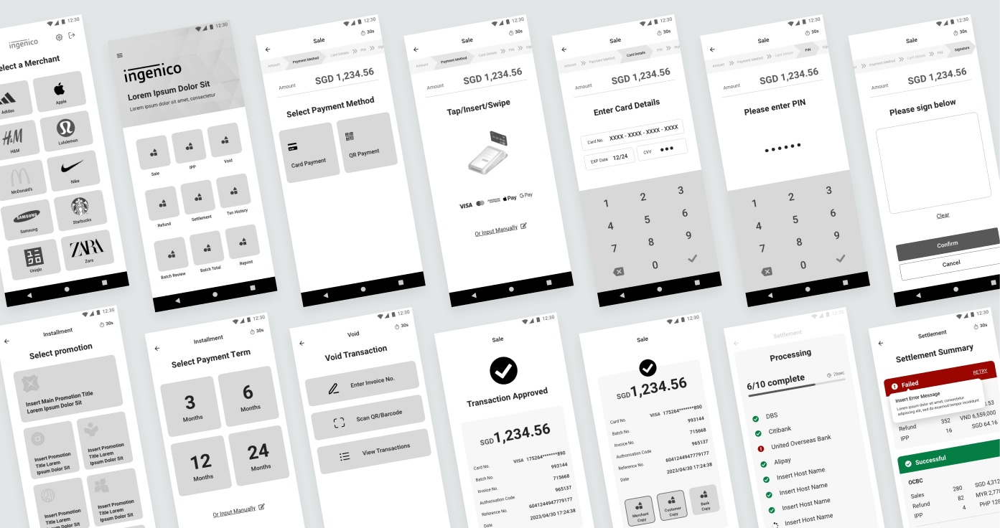